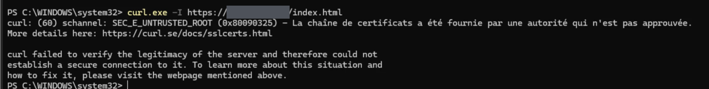
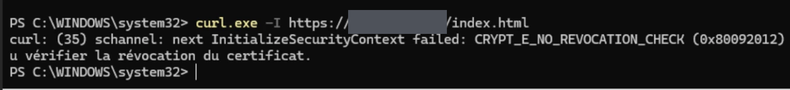
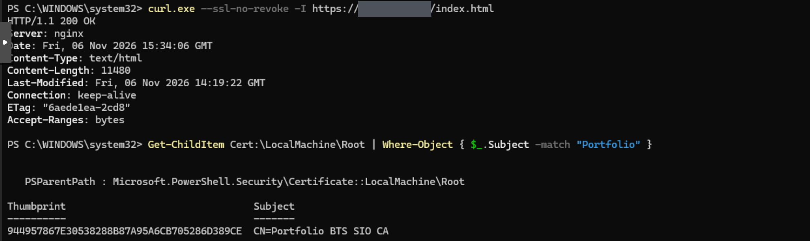
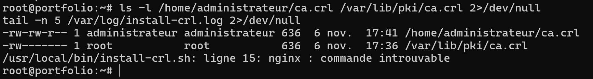
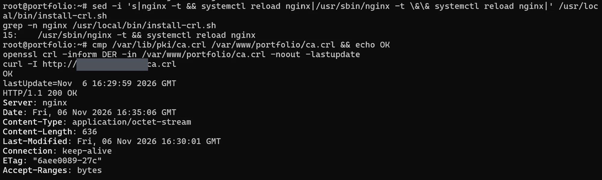
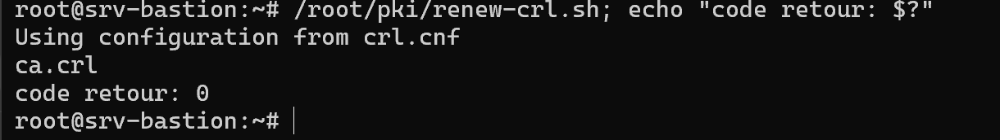
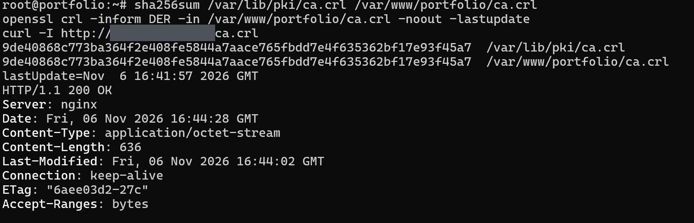
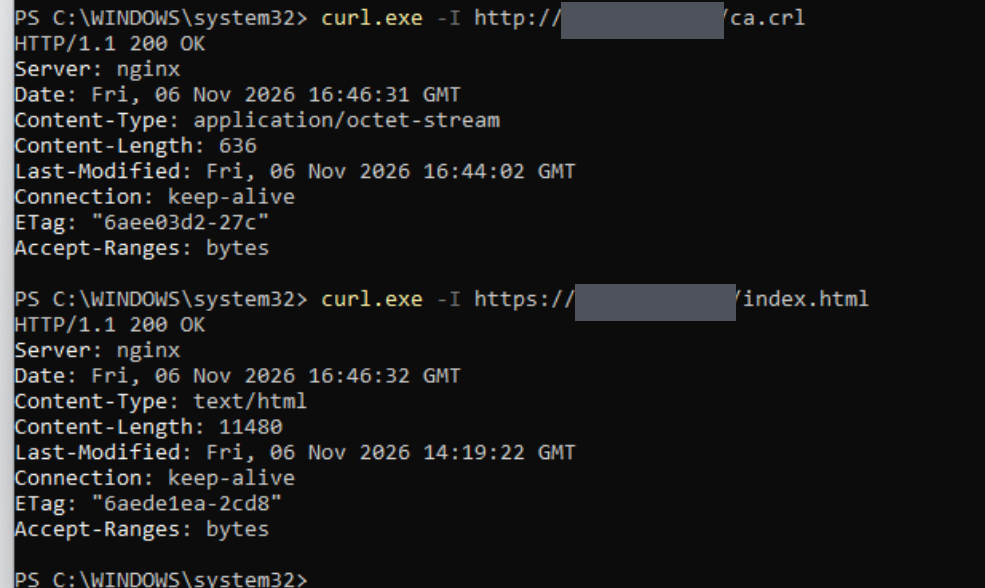
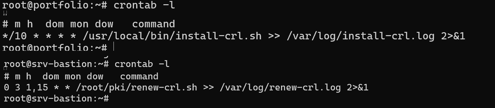
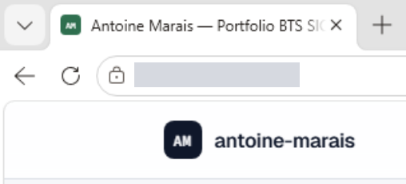

Contexte et objectif
Le portfolio est un site statique servi par nginx sur une machine virtuelle de la DMZ. Il est publié sur le réseau de l'établissement par une adresse virtuelle du pare-feu (HTTP et HTTPS), grâce à une politique dédiée. L'objectif : un HTTPS sans avertissement sur les postes du domaine, sans nom public et sans autorité externe.
Cette publication n'est joignable que depuis le réseau de l'établissement (adresse privée). La version publique du portfolio est hébergée séparément, sur GitHub Pages.
Architecture
- Un poste du domaine ou un PC de l'établissement atteint l'adresse virtuelle du pare-feu en HTTP ou HTTPS. Une politique de publication le dirige vers la VM web de la DMZ.
- La VM sert le site avec nginx. Le serveur reste isolé : tout flux de la DMZ vers le réseau interne est refusé et journalisé.
- Le bastion héberge l'autorité de certification. Sa clé privée n'en sort jamais.
- Le 1er et le 15 de chaque mois à 3 h, le bastion génère une nouvelle liste de révocation (CRL) et la dépose sur la VM web par une clé SSH restreinte.
- Toutes les 10 minutes, la VM web installe la CRL reçue, la publie et recharge nginx si elle a changé.
Choix de conception
- Autorité interne plutôt que Let's Encrypt : le site n'a pas de nom public et reste sur une adresse privée.
- Clé de l'autorité hors DMZ : elle reste sur le bastion (droits 600). Une sauvegarde chiffrée reste à prévoir.
- Révocation vérifiée : Windows refuse le certificat si la CRL est absente (erreur CRYPT_E_NO_REVOCATION_CHECK constatée avant la publication). Le point de distribution de la CRL est inscrit dans le certificat.
- Certificat limité à l'usage serveur (pas une autorité), valable pour les deux adresses du site (champ SAN).
- Sortie de la DMZ fermée : une politique temporaire a servi au clonage du dépôt, puis elle a été désactivée. Le site est servi localement.
- Serveur durci : version de nginx masquée, TLS 1.2 et 1.3 uniquement, fichiers cachés refusés (le dépôt .git renvoie 403), sauvegardes hors de la racine web.
- Clé SSH restreinte à l'adresse du bastion, en mode restrict.
# nginx (extrait)
server {
listen 443 ssl;
ssl_protocols TLSv1.2 TLSv1.3;
server_tokens off;
location ~ /\. { deny all; }
}
# Extensions du certificat serveur
basicConstraints = CA:FALSE
keyUsage = digitalSignature, keyEncipherment
extendedKeyUsage = serverAuth
crlDistributionPoints = URI:http://<adresse-du-site>/ca.crlDéploiement sur le domaine
Une GPO « PKI-Portfolio-CA », liée au domaine, installe l'autorité dans le magasin des autorités racines de confiance des postes. Les postes hors domaine (jury, recruteurs) affichent un avertissement, sauf si le certificat de l'autorité y est installé.
Incidents corrigés
| Symptôme | Cause | Correction |
|---|---|---|
| Clonage du dépôt bloqué | Refusé par la politique (« policy 0 »), relevé avec diagnose debug flow | Politique temporaire ciblée, désactivée après le clonage |
| SEC_E_UNTRUSTED_ROOT | Autorité absente du magasin du poste | Déploiement de l'autorité par GPO |
| CRYPT_E_NO_REVOCATION_CHECK | CRL non publiée | Publication de la CRL et point de distribution dans le certificat |
| nginx : commande introuvable | nginx absent du PATH de cron | Chemin absolu /usr/sbin/nginx dans le script |
| Clé SSH restreinte sans effet | Adresse source documentée différente de l'adresse réelle du bastion | Adresse relevée dans les journaux sshd et corrigée |
Exploitation
| Tâche | Fréquence | Où |
|---|---|---|
| Renouvellement de la CRL | 1er et 15 du mois, 3 h | Bastion (cron) |
| Installation de la CRL | Toutes les 10 min | VM web (cron) |
| Mise à jour du site | À la demande | VM web (clonage temporaire puis copie) |
| Certificat serveur | Vers février 2029 | Bastion puis VM web |
| Autorité | Vers novembre 2031 | Bastion, puis redéploiement par GPO |
Point de vigilance : un clonage dans le dossier web efface la CRL. Il faut la remettre en place, ce que fait le script d'installation.
Preuves
- Cycle de la CRL : le renouvellement renvoie 0, les empreintes de la CRL sont identiques sur le bastion et la VM web, et la CRL répond en 200.
- Accès HTTPS sans contournement : la requête répond 200 OK sans désactiver la vérification de révocation ni du certificat.
- Déploiement : l'autorité « Portfolio BTS SIO CA » figure dans le magasin Root d'un poste, avec son empreinte.
- Automatisation : les deux tâches cron sont en place.
Limites et suite
- Le port 80 est encore servi : pas de redirection forcée vers HTTPS (à faire).
- Pas de nom public : l'accès depuis Internet exigerait un nom de domaine, un certificat reconnu publiquement et une redirection de ports par l'établissement. Le test depuis l'extérieur du réseau reste à faire.
- Accès mobile hors établissement par Tailscale : non réalisé. La capture du cadenas sur iPhone reste à faire.
- Preuves à ajouter : la GPO vue depuis un poste client (Get-GPInheritance) et les contrôles du serveur (.git en 403, sauvegardes en 404, sortie de la DMZ fermée, clé SSH restreinte).
- Sauvegarde chiffrée de la clé de l'autorité à prévoir.
Captures d'écran









